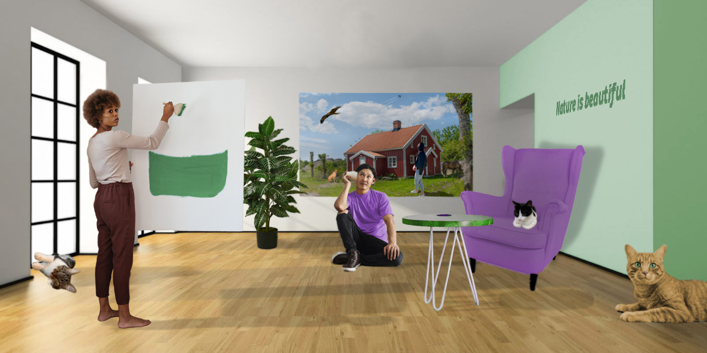
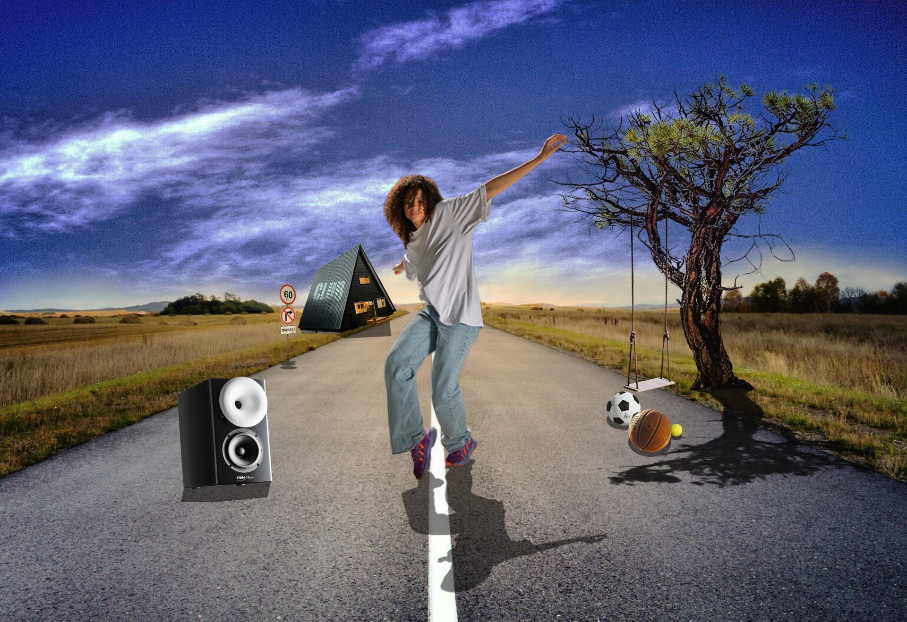
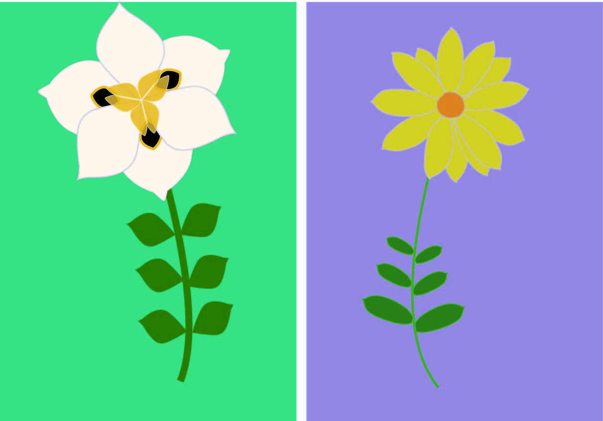
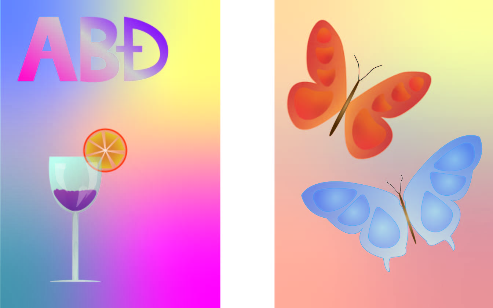

Moje Vježbe
Ovdje su par mojih radova s ovog kolegija:
PHOTOSHOP



Zadaci koje sam radila u programu Photoshop uključuju koloriranje i fotomontažu.
U prvom i drugom primjeru, iz mnogo različitih slika izrezala sam razne elemente i pomoću raznih alata ih ukomponirala u jednu sliku na najbolji mogući način.
U trećem primjeru, igrala sam se koloriranjem. Uzevši svoju fotografiju, koristeći maštu, izmijenila sam boje na šest različitih načina.
ILLUSTRATOR


Na prvoj fotografiji zadatak je bio nacrtati bilo koji predmet, a ja sam odabrala cvijet. Igrala sam se bojama i transformacijama kako bih postigla lijepi rezultat.
Na drugom primjeru prikazana je igra transparencije i gradijenata. Kao slobodan izbor, izabrala sam leptire koje jako volim. Nacrtala sam ih koristeći
Pen Tool, te sam po želji dodavala zadane elemente.
PREMIERE PRO
Kao zadatak, imala sam ukombinirati nekoliko videa i složiti ih u jednu cjelinu, dodajući zvuk i efekte po želji. Koristila sam dane primjere videa koje sam
izrezala, posložila i uredila da nastane kratak videozapis. Uživala sam radeći na ovom projektu jer je bio nešto drugačiji od ostalih,
te ću ga definitivno nastaviti koristiti.